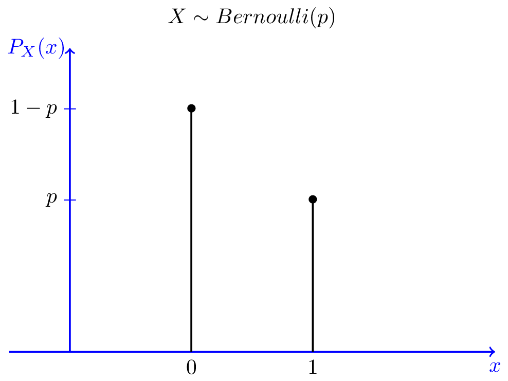
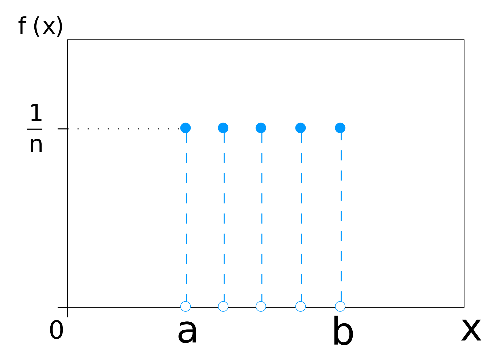
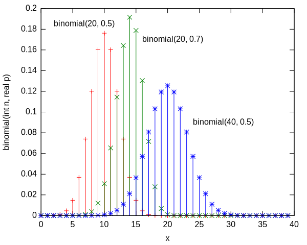
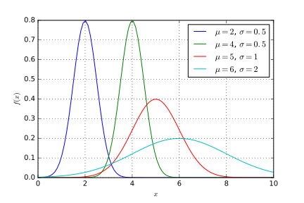

5.2 Wybrane (skokowe i ciągłe) rozkłady prawdopodobieństwa
W badaniach statystycznych stosuje się dwa podstawowe rodzaje rozkładów prawdopodobieństwa zmiennych losowych, a mianowicie rozkłady skokowe i rozkłady ciągłe.
- Rozkład zero-jedynkowy/Bernoulliego (skokowy)
- Rozkład jednostajny (skokowy lub ciągły)
- Rozkład dwumianowy (skokowy)
- Rozkład normalny (ciągły)
5.2.1 Rozkład zero-jedynkowy (Bernoulliego)

5.2.2 Rozkład zero-jedynkowy (Bernoulliego)
Jest on związany z rezultatem doświadczenia (zwanego próbą Bernoulliego), w wyniku którego określone zdarzenie A wystąpi (1 = ‘sukces’) lub nie wystąpi (0 = ‘porażka’).
Rozkład dwupunktowy jest funkcją przyporzadkowującą prawdopodobieństwa wynikom próby Bernoulliego.
Rozkład ma jeden parametr p oznaczający prawdopodobieństwo ‘sukcesu’ : \(X \sim Bern(p)\)
5.2.3 Rozkład Bernoulliego - równanie funkcji
\[f(k;p)=p^{k}(1-p)^{1-k} \text{ dla } k\in \{0,1\}\]
5.2.4 Rozkład jednostajny (skokowy)

5.2.4.1 Rozkład jednostajny skokowy - równanie funkcji
Jeśli \(X \sim U(a, b)\),
\(a\) i \(b\) \(\in \{\dots,-2,-1,0,1,2,\dots\}\)
\(b \geq a\)
\(f(x) = \frac{1}{n}\), przy czym: \(n=b-a+1\)
5.2.5 Rozkład dwumianowy
Jest to dyskretny rozkład prawdopodobieństwa opisujący prawdopodobieństwo liczby k ‘sukcesów’ w ciągu n niezależnych prób, z których każda ma stałe prawdopodobieństwo sukcesu równe p. Pojedynczy eksperyment nosi nazwę próby Bernoulliego.
Rozkład ma dwa parametry : \(X \sim Bin(n, p)\), przy czym n = liczba niezależnych prób, p = prawdopodobieństwo ‘sukcesu’.
Zmienna losowa ma rozkład dwumianowy w następujących warunkach:
- wieoetapowy eksperyment losowy złożony ze skończonej liczby \(n \geq 1\) prób (etapów),
- dokładnie dwa możliwe wyniki, zwyczajowo określane jako sukces (1) i porażka (0),
- prawdopodobieństwo sukcesu/porażki jest stałe na wszystkich etapach doświadczenia.
5.2.5.1 Rozkład dwumianowy - równanie funkcji
Jeśli zmienna losowa ma rozkład dwumianowy: \(X \sim Bin(n, p)\),
\(P\)(k sukcesów w n próbach (trials)) = \(C_k^n(p^k \times (1-p)^{n-k})\)
gdzie: \(p\) = prawdopodobieństwo tzw. ‘sukcesu’ (oznaczane zwykle cyfrą \(1\)), czyli np. prawdopodbieństwo wyrzucenia dwóch szóstek w pięciu rzutach kością (\(n = 5\)); \((1-p) = q\) = prawdopodobieństwo tzw. ‘porażki’, oznaczane cyfrą \(0\).
5.2.5.2 Rozkład dwumianowy - podsumowanie
Criteria for a Binomial Probability Experiment
A binomial experiment is an experiment which satisfies these four conditions:
A fixed number of trials
Each trial is independent of the others
There are only two outcomes
The probability of each outcome remains constant from trial to trial.
In short: An experiment with a fixed number of independent trials, each of which can only have two possible outcomes.
(Since the trials are independent, the probability remains constant.)
5.2.5.3 Rozkład dwumianowy - wykres

5.2.5.4 Rozkład dwumianowy - przykład 0 (nieformalne wyprowadzenie równania funkcji)
Once we determine that a random variable is a binomial random variable, the next question we might have would be how to calculate probabilities.
Let’s consider the experiment where we take a multiple-choice quiz of four questions with four choices each, and the topic is something we have absolutely no knowledge. If we let Z = the number of correct answer, then Z is a binomial random variable because:
there are a fixed number of questions (4),
the questions are independent,
since we’re just guessing each question has two outcomes - we’re right or wrong,
the probability of being correct is constant, since we’re guessing: 1/4 = 0.25 = the probability of “success” in a single Bernoulli trial X_i, (i = 1, 2, 3, 4).
So how can we find probabilities? Let’s look at a tree diagram of the situation:
Finding the probability distribution of Z involves a couple key concepts. First, notice that there are multiple ways to get 0, 1, 2, 3 or 4 questions correct. In fact, we can use the combinations without repetitions (nCk) to figure out how many ways there are. For example, P(Z = 3) is the same regardless of the order in which we get 3 correct,;we can just multiply the probability of one line by 4, since there are 4 ways to get 3 correct.
Not only that, since the questions are independent, we can just multiply the probability of getting each one correct or incorrect.
The general equation of the Binomial distribution is,
\(P\)(k sukcesów w n próbach (trials)) = \(C_k^n(p^k \times (1-p)^{n-k})\)
gdzie: \(p\) = prawdopodobieństwo tzw. ‘sukcesu’ (oznaczane zwykle cyfrą \(1\)); \((1-p) = q\) = prawdopodobieństwo tzw. ‘porażki’, oznaczane cyfrą \(0\); \(C_k^n = nCk =\) liczba k-elementowych kombinacji bez powtórzeń, ze zbioru n-elementowego.
Inspect Table below to understand the above general equation of the Binomial distribution.
Tabela. Rozkład dwumianowy - konstrukcja
5.2.5.5 Rozkład dwumianowy - przykład 1
Jakie jest prawdopodobieństwo \(P\), że przy 5 rzutach sześciościenną kością wypadną 2 szóstki?
Jakie jest prawdopodobieństwo \(P\), że przy 5 rzutach sześciościenną kością otrzymamy 2 szóstki w następującej kolejności \((6, 6', 6, 6',6')\), czyli \(P(6, 6', 6, 6',6') = ?\) Przy czym, \(6'\) oznacza, że nie wyrzucono \(6\) oczek.
Odpowiedź na drugie (2.) pytanie:
\[P(6, 6', 6, 6',6') = \frac{1}{6} \times \frac{5}{6} \times \frac{1}{6} \times \frac{5}{6} \times \frac{5}{6} = 0.0161\]
\[P(6, 6', 6, 6',6') = (\frac{1}{6})^2 \times (\frac{5}{6})^3 = 0.0161\]
Odpowiedź na pierwsze (1.) pytanie:
Na ile możliwych sposobów można wyrzucić 2 szóstki w 5 rzutach kością (innymi słowy, w tzw. 5 próbach Bernoulliego)?
\(A = \{(6', 6', 6, 6, 6), (6', 6, 6', 6, 6), (6', 6, 6, 6', 6), (6', 6, 6, 6, 6'), (6, 6', 6', 6, 6), (6, 6', 6, 6', 6), (6, 6', 6, 6, 6'), (6, 6, 6', 6', 6), (6, 6, 6', 6, 6'), (6, 6, 6, 6', 6')\}\)
\[C_{2}^{5} = |\{\{1,2\},\{1,3\},\{1,4\},\{1,5\},\]
\[\{2,3\},\{2,4\},\{2,5\},\{3,4\},\{3,5\},\{4,5\}\}| = 10\]
\[P(\text{dwie 6 w pięciu próbach}) = C_2^5((\frac{1}{6})^2 \times (\frac{5}{6})^{5-2}) = \] \[= 10 \times 0.0161 = 0.161\]
UWAGA (a)
Zauważ, że ze zbioru \(\{6, 6'\}\) można utworzyć \(2^5 = 32\) ciągów 5-wyrazowch. Zatem, zbiór zdarzeń elemenatrynych (\(\Omega\)) w eksperycmecie polegającym na 5-krotnym rzucie sześciościenną kością do gry zawiera 32 elementy (np. \((1,2,3,3,6) = (6',6',6',6',6)\) t.j. wyrzucono jedną ‘szóstkę’ na pozycji nr 5).
UWAGA (b)
Rzucamy sześciościenną kością 2-razy. Ile jest wszystkich możliwych wyników?
\(6^2 = 36\) (np. \((1,6)\))
UWAGA (c)
\(P(\text{dwie 6 w pięciu próbach})\) nie jest równe \(\frac{10}{32} = 0.3125\). Dlaczego?
5.2.5.6 Rozkład dwumianowy - przykład 2
Załóżmy, że zdarzenia \(A = 6\) i \(A' = 6'\) są jednakowo prawdopodobne (sześciościenna kość ma na 3 ścianach 6 i na 3 pozostałych 6’). Wtedy:
\(P(\text{dwie 6 w pięciu próbach})\) = \(\frac{10}{32} = 0.3125\)
Korzystając z funkcji rozkładu dwumianowego:
\(P(\text{dwie 6 w pięciu próbach}) = C_2^5((\frac{1}{2})^2 \times (\frac{1}{2})^{5-2}) =\) \(= 0.3125 = 10/32 = 5/16\)
5.2.5.7 Rozkład dwumianowy - przykład 3
Rzucamy \(3\) razy uczciwą monetą. Dla tego eksperymentu, określono zmienną losową Y = suma ‘sukcesów’, przyjmując, że wyrzucenie reszki (R) to ‘sukces’ (oznaczmy to zdarzenie cyfrą \(1\)). Zbuduj rozkład prawdopodbieństwa dla dla zmiennej Y.
\(X = \{R, O\}\)
| i | \(X_1, X_2, X_3\) | \(P_i\) |
|---|---|---|
| 1 | ROO | 0.125 |
| 2 | ORO | ? |
| 3 | OOR | ? |
| 4 | ORR | ? |
| 5 | RRO | ? |
| 6 | ROR | ? |
| 7 | RRR | 0.125 |
| 8 | OOO | ? |
| - | - | 1 |
Rozkład prawdopodobieństwa zmiennej Y przedstawia tabela:
| i | Y | \(P_i\) |
|---|---|---|
| 1 | 3 | 0.125 |
| 2 | 2 | ? |
| 3 | 1 | 0.375 |
| 4 | 0 | ? |
| - | - | 1 |
5.2.6 Rozkład jednostajny ciągły

5.2.7 Rozkład jednostajny ciągły - równanie funkcji
Jeśli: \(X \sim U(a, b)\),
\(f(x)={\begin{cases}{\frac {1}{b-a}} &\mathrm {dla} \ a\leq x\leq b, \\0 &\mathrm {dla} \ x<a\ \mathrm {lub} \ x>b\end{cases}}\)
5.2.7.1 Rozkład jednostajny ciągły - zadanie
Można przyjąć, że rozkład prawdopodobieństwa zmiennej losowej X = czas oczekiwania na odjazd pociągu metra, jest rozkładem jednostajnym ciągłym.
Jeśli pociąg metra linii A odjeżdża z przystanku dokładnie co 5 minut, to jakie jest prawdopodobieństwo, że pasażer po przybyciu na przystanek będzie czekał na odjazd więcej niż 3 minuty.
5.2.8 Rozkład normalny

5.2.8.1 Rozkład normalny - równanie funkcji
Jeśli \(X \sim N(\mu, \sigma^2)\), gdzie: \(\mu\) - wartość oczekiwana zmiennej, \(\sigma^2\) - wariancja zmiennej,
\[f(x; \mu, \sigma^2) = \frac{1}{{\sigma \sqrt {2\pi } }}e^{-\frac{(x - \mu)^2}{2\sigma^2}}\]
5.2.9 Zmienna losowa i jej rozkład prawdopodobieństwa - przykłady
5.2.9.1 Przykład 1. Zmienna losowa
W doświadczeniu losowym obejmującym rzut trzema uczciwymi monetami (\(n = 3\)), chcemy zapytać o prawdopodobieństwo wyrzucenia \(k\) reszek (R) - przyjmujemy umownie, że wyrzucenie reszki jest sukcesem, a wyrzucenie orła jest porażką.
Zdefiniuj przestrzeń zdarzeń elementarnych i określ na tej przestrzeni zmienną losową Y. \(Y\) = suma wyników (“sukces” lub “porażka”) pojedynczych rzutów monetą oraz jej rozkład prawdopodobieństwa.
Zauważ, że doświadczenie losowe z przykładu to tzw. doświadczenie (eksperyment) dwumianowy. Zmienna losowa, którą zdefiniujemy będzie zmienną dwumianową, a w konsekwencji powstanie dwumianowy rozkład prawdopodobieństwa.
Eksperyment dwumianowy ma następujące cechy:
Eksperyment składa się z n etapów (trials) - z tzw. prób (Bernoullego). Dwumianowa zmienna losowa (zmienna o rozkładzie dwumianowym) jest sumą zmiennych Bernoullego (zmiennych o rozkładzie Bernoullego/rozkładzie zero-jedynkowym z parametrem p = prawdopodobieństwo sukcesu): \(Y = X_1 + X_2 + ... + X_n\)
Każda pojedyncza próba Bernoullego (pojedynczy rzut monetą, losowanie z populacji wyborców jednego wyborcy itp.) ma tylko dwa możliwe wyniki - sukces (1) i porażkę (0).
Prawdopodobieństwo sukcesu oznaczamy p, jest identyczne na każdym etapie doświadczenia.
Wyniki z poszczególnych etapów doświadczenia są od siebie niezależne (możemy więc korzystać z metod obliczania prawdopodobieństw dla zdarzeń niezależnych); tzn., że wyniki z poszczególnych etapów nie wpływają na siebie; np. wyrzucenie orła na pierwszym etapie doświadczenia nie modyfikuje prawdopodobieństwa wyrzucenia orła/reszki na pozostałych etapach.
Zacznijmy od określenia przestrzeni zdarzeń elementarnych \(S\).
\(S = \{ (R, R, R), (R, R, O), (R, O, O), (O, O, O), (O, O, R), (O, R, R), (O, R, O), (R, O, R) \}\). Liczebność zbioru \(S\) (\(|S|\)) możemy policzyć stosując regułę iloczynu (Fundamenetal Principle of Counting). W tym przykładzie, dla \(X = \{R, O}\), \(|X| = 2\), mamy \(2 \times 2 \times 2 = 2^3 = 8\) (osiem zdarzeń elementarnych).
Aby określić zmienną losowa na zbiorze \(S\) musimy poszczególnym wynikom przypisać liczby wg pewnej reguły. Np. możemy przyjąć, że wyrzucenie 1 reszki to 1, dwóch reszek 1 + 1 itd.
I tak, możemy zdefiniować zmienną Y:
\((R, R, R) \rightarrow 3\); \((R, R, O) \rightarrow 2\); \((O, R, R) \rightarrow 2\); \((...) \rightarrow ...\); \((O, O, O) \rightarrow 0\).
Następnie, jeśli przypiszemy każdej ustalonej wartości zmiennej losowej Y odpowiednie prawdopodobieństwa, \(P(Y = ...) = ...\), zbudujemy odpowiadający tej zmiennej rozkład prawdopodobieństwa.
W rozważanym przypadku, wartości prawdopodobieństwa znajdziemy korzystając z funkcji rozkładu dwumianowego z parametrami \(p = 0.5 \text{ i } n = 3\) - jak wynika z opisu doświadczenia losowego, zmienna Y ma rozkład dwumianowy, \(Y = \{0, 1, 2, 3\}\).
Możemy ten rozkład przedstawić np. tabelarycznie (Zob. tabela niżej).
| y | f(y) = p | formuła | |
|---|---|---|---|
| 1 | 0 | 1/8 | \(f(x; n=3, p=0.5) = \binom{3}{0}0.5^0(1-0.5)^3\) |
| 2 | 1 | 3/8 | \(f(x; n=3, p=0.5) = \binom{3}{1}0.5^1(1-0.5)^2\) |
| 3 | 2 | 3/8 | \(f(x; n=3, p=0.5) = \binom{3}{2}0.5^2(1-0.5)^1\) |
| 4 | 3 | 1/8 | \(f(x; n=3, p=0.5) = \binom{3}{3}0.5^3(1-0.5)^0\) |
| - | - | 1 | - |
Tabela. Rozkład prawdopodobieństwa zmiennej Y
Dlaczego prawdopodobieństwo wyrzucenia, na przykład, 1 reszki (1 sukces) jest równe 3/8?
W tym przykładzie, prawdopodobieństwo sukcesu p (wyrzucenia reszki) jest równe \(1/2\), dlatego prawdopodobieństwo porażki (zdarzenia przeciwnego) też wynosi \(1/2\), bo \(1-1/2 = 1/2\).
Eksperyment losowy z przykładu jest tzw. złożonym (wieloetapowym) eksperymentem - składa się z trzech etapów (lub prób (trials)) - pierwszy rzut, drugi rzut i trzeci rzut monetą - dlatego n = 3 (liczba etapów/rozmiar próby (sample)).
W przypadku eksperymentu złożonego, stosujemy regułę mnożenia (w tym przykładzie możemy użyć reguły mnożenia dla niezależnych zdarzeń losowych) do obliczenia prawdopodobieństw.
Rozpocznijmy od obliczenia prawdopodobieństwa otrzymania w eksperymencie 3-etapowym jednej reszki w pewnym z góry ustalonym porządku (np. prawdopodobieństwo pojawienia się ciągu (R,O,O)):
\[P((R,O,O)) = P((1,0,0)) = p^1 \times (1-p)^2 = (1/2)^1 \times (1/2)^2 = 1/8\]
Ponadto,
\[P((O,R,O)) = P((0,1,0)) = (1-p) \times p \times (1-p) = (1/2) \times (1/2) \times (1/2) = 1/8\]
\[P((O,O,R)) = P((0,0,1)) = (1-p)^2 \times p^1 = (1/2)^2 \times (1/2)^1 = 1/8\]
Wtedy, prawdopodobieństwo wyrzucenia reszki na jednym z 3 etapów w dowolnej kolejności wynosi:
\[P(\{(R,O,O), (O,R,O), (O,O,R)\}) = P((R,O,O)) + P((O,R,O)) + P((O,O,R)) =\]
\[= 1/8 + 1/8 + 1/8 = 3/8 =\]
\[= \binom{3}{1} \times (1/2)^1 \times (1/2)^2 = 3 \times (1/2)^1 \times (1/2)^2 = 3/8\]
Ogólnie, prawdopodobieństwo wylosowania x reszek w n próbach (trials) w dowolnej kolejności jest równe:
\[P(X = x) = f(x; n = \text{liczba prób}, p = \text{prawdopodobieństwo sukcesu}) = \\ = \binom{n}{x} p^x(1-p)^{n-x} = \frac{n!}{(n-x)!x!} p^x(1-p)^{n-x}, \text{ dla } x = 0, 1, 2, ..., n\]
Zauważ, że \(\binom{3}{1} = |\{\{1\}, \{2\}, \{3\}\}| = 3\) - jest to liczba 1-elementowych kombinacji ze zbioru 3-elementowego.
W przypadku tzw. eksperymentu dwumianowego, można myśleć o każdej pojedynczej kombinacji ze zbioru n-elementów jak o zbiorze zawierającym współrzędne wskazujące miejsce sukcesu/sukcesów w ciągu wyników.
W analizowanym przykładzie, zbiory \(\{1\}, \{2\}, \{3\}\) wskazują, że sukces (reszka) może się pojawić tylko na pierwszym, tylko na drugim lub tylko na trzecim etapie.
Jeśli mielibyśmy współczynnik dwumianowy \(\binom{3}{2} = 3 = |\{\{1,2\}, \{1,3\}, \{2,3\}\}|\), to elementy zbiorów \(\{1,2\}, \{1,3\}, \{2,3\}\) wskazują, że reszka (sukces) może się pojawić tylko na pierwszym i jednocześnie na drugim etapie, tylko na pierwszym i trzecim, albo tylko na drugim i trzecim etapie.
Nie wolno mylić ciągu np. \((H, T, H)\) ze zbiorem \(\{H, T, H\} = \{H, T\} = \{T, H\}\).
5.2.9.2 Przykład 2. Rozkład dwumianowy i jego przybliżenie rozkładem normalnym
Zmienna losowa X - liczba wyrzuconych reszek w n rzutach dobrze wywarzoną monetą - ma rozkład dwumianowy. Jeżeli prawdopodobieństwo wyrzucenia reszki \(p\) jest równe \(0.5\), to jakie jest prawdopodobieństwo, że w 10 rzutach monetą wypadnie co najmniej 7 reszek.
Dane:
\(X \sim Bin(10, 0.5)\)
Rozwiązanie:
Stosujemy równanie funkcji rozkładu dwumianowego: \[P(X = x) = f(x; n, p) = \binom{n}{x} p^x(1-p)^{n-x}, \text{dla } x = 0, 1, 2, ..., n\]
Skumulowana postać funkcji rozkładu dwumianowego dana jest równaniem:
\[F(x) = P(X \leq x) = \sum_{a=0}^x \binom{n}{a} p^a(1-p)^{n-a}, \text{dla } x = 0, 1, 2, ..., n\]
Podstawiając do wzoru odpowiednie wartości otrzymujemy:
\[P(X \geq 7 | n = 10, p = 0.5) = P(X = 7) + P(X = 8) + P(X = 9) + P(X = 10) =\]
\[= \sum_{a = 7}^{10} \binom{10}{a} 0.5^a(1-0.5)^{10-a} =\]
\[\binom{10}{7}(\frac{1}{2})^7(\frac{1}{2})^3 + \binom{10}{8}(\frac{1}{2})^8(\frac{1}{2})^2 + \binom{10}{9}(\frac{1}{2})^9(\frac{1}{2})^1 + \binom{10}{10}(\frac{1}{2})^{10}(\frac{1}{2})^0 = \frac{176}{1024}\]
Jeżeli zmienna losowa \(X \sim Bin(100, 0.6)\). Jakie jest \(P(X \geq 65) = P(\frac{X}{n} \geq 0.65)\)?
Z teorii statystyki wiadomo, że rozkład zmiennej X można przybliżyć rozkładem normalnym z parametrami \(\mu = np\) i \(\sigma = \sqrt{np(1-p)}\), co zapisujemy \(N(np, \sqrt{np(1-p)})\). Ogólnie mówiąc, z twierdzeń rachunku prawdopodobieństwa (tzw. twierdzeń granicznych) wynika, że im większa jest wartość n, tym bardziej kształt rozkładu dwumianowego przypomina kształt rozkładu normalnego, przy założeniu, że \(np > 5\) i \(n(1-p) > 5\).
Dla proporcji \(\frac{X}{n}\), przy czym X ma rozkład dwumianowy, mamy następujący układ parametrów: \(\mu = p\) i \(\sigma = \sqrt{\frac{p(1-p)}{n}}\), co zapisujemy \(N(p, \sqrt{\frac{p(1-p)}{n}})\).
W przykładzie mamy \(p = 0.6\) i \(n = 100\), więc \(\frac{X}{n} \sim N(0.6, 0.0489)\).
Teraz możemy zastosować przybliżenie rozkładu dwumianowego (rozkład zmiennej dyskretnej) rozkładem normalnym (rozkład zmiennej ciągłej). Wartości prawdopodobieństw obliczonych dla zmiennych o rozkładzie normalnym z parametrami \(\mu = 0\) i \(\sigma = 1\) zostały stablicowane, dlatego łatwo można szukane prawdopodobieństwa znaleźć. Jednak, żeby wykorzystać tablice i nie liczyć wartości całek funkcji gęstości rozkładu normalnego musimy wartości zmiennej \(\frac{X}{n} \sim N(0.6, 0.0489)\) przekształcić w taki sposób, aby utworzona w wyniku tego przekształcenia zmienna pomocnicza, zwyczajowo określana jako zmienna Z, miała rozkład \(N(0, 1)\). Takie przekształcenie nazywamy standaryzacją zmiennej losowej.
Korzystamy z faktu, że jeśli zmienna \(X \sim N(\mu, \sigma)\), to zmienna \(Z = \frac{(X-\mu)}{\sigma} \sim N(0, 1)\).
Czyli, dla rozważanego przykładu mamy \(Z = \frac{\frac{X}{n} – p}{\sqrt{\frac{p(1-p)}{n}}}\), a konkretnie dla wartości \(\frac{X}{n} = 0.65\) otrzymujemy wartość \(Z = 1.02\), czyli \(P(\frac{X}{n} \geq 0.65) = P(Z \geq 1.02)\). Po standaryzacji można teraz prawidłową wartość odczytać z tablic rozkładu normalnego. Otrzymujemy ostatecznie, że \(P(\frac{X}{n} \geq 0.65) = P(Z \geq 1.02) = 1 – P(Z \leq 1.02)\), odczytując bezpośrednio z tablic otrzymujemy wynik \(= 1 – 0.8461 = 0.1539 = 15.39\%\).
Odp.: \(P(\frac{X}{n} \geq 0.65) = 15.39\%\)
Uzyskane przybliżenie jest dość dobre, ale z praktyki i teorii statystyki wynika, że lepsze przybliżenie uzyskamy jeżeli zamiast poszukiwać \(P(X \geq 65) = P(\frac{X}{n} \geq 0.65)\), obliczymy \(P(X \geq 64.5) = P(\frac{X}{n} \geq 0.645)\). Taka korekta zadania gwarantuje uzyskanie lepszego przybliżenia.
Ogólnie, przybliżając (aproksymując) rozkład dwumianowy rozkładem normalnym, do wartości zmiennej np. \(X\) dodajemy (gdy szukamy np. \(P(X \leq x)\)) lub odejmujemy 0.5 (gdy poszukujemy \(P(X \geq x)\)).
Sprawdź, czy rzeczywiście wynik będzie bardziej dokładny, jeżeli wiadomo, że prawidłowa szukana wartość prawdopodobieństwa dla \(X \geq 65\) i obliczona za pomocą funkcji rozkładu dwumianowego \(= 0.1795\).
Badania na reprezentatywnych próbach pozwoliły ustalić, że 55% ankietowanych deklaruje chęć oddania głosu na polityka A w zbliżających się wyborach do rady miejskiej. Kandydat jednak prognozuje lepszy wynik wyborczy i uważa, że poprze go co najmniej 65% wyborców. Przyjmując, że zmienna losowa \(X\sim Binom(n, 0.55)\), jakie jest prawdopodobieństwo, że poparcie polityka w grupie liczącej 100 losowo wybranych wyborców wyniesie przynajmniej 65% = 0.65 (tj. prawdopodobieństwo, że \(X \geq 65\))?
Dane: \(X\sim Binom(100, 0.55)\)
Rozwiązanie: Szukamy prawdopodobieństwa \(P(\frac{X}{n}\geq 0.65) = P(X\geq 65)\).
\[P(X \geq 65 | n = 100, p = 0.55) = \sum_{a = 65}^{100} \binom{100}{a} 0.55^a(1-0.55)^{100-a} = 0.0272\]
Niestety, jeżeli nie mamy dostępu do dobrego oprogramowania statystycznego, wyznaczenie wartości szukanego prawdopodobieństwa z zastosowaniem rozkładu dwumianowego może się okazać bardzo uciążliwe. Należy pamiętać, że rozkład zmiennych o rozkładzie dwumianowym oraz rozkład proporcji \(\frac{X}{n}\) można przybliżyć rozkładem normalnym, gdy \(np\) i \(n(1-p) \geq 5\). Wówczas \(X \sim N(\mu = np, \sigma = \sqrt{np(1-p)})\) lub \(\widehat{p} = \frac{X}{n} \sim N(\mu = p, \sigma = \sqrt{\frac{p(1-p)}{n}})\).
W celu skorzystania z rozkładu normalnego należy na podstawie dostępnych danych ustalić wartość parametrów tego rozkładu, a więc wartość średniej \(\mu\) i odchylenia standardowego \(\sigma\).
Żeby obliczyć wartość prawdopodobieństwa dokonujemy standaryzacji zmiennej X. Nie wiemy ile wynosi p, więc korzystamy z oszacowania na podstawie wcześniejszych badań. Otrzymujemy \(Z = \frac{0.65-0.55}{\sqrt{\frac{0.55(1-0.55)}{100}}} = 2.01\). Otrzymana liczba, to wartość 65 na skali zmiennej \(Z \sim N(0, 1)\).
Ostatni krok to odczytanie wartości całki funkcji gęstości rozkładu normalnego dla zmiennej standaryzowanej Z w przedziale \((2.01, +\infty)\). Całka ta jest równa 1 - 0.9778 = 0.0222. Szukane P wynosi ok. 2.2%.
Warto pamiętać, że lepsze przybliżenie otrzymamy, gdy od wartości zmiennej dwumianowej odejmiemy 0.5, czyli, gdy będziemy szukać prawdopodobieństwa w rozkładzie normalnym dla liczby 64.5 zamiast 65. Wtedy mamy \(Z = 1.91\) i \(P = 2.8\%\).
Na podstawie wcześniejszych badań na reprezentatywnej próbie ustalono, że proporcja (frakcja, częstość względna) Polaków, którzy mają zaufanie do prezydenta RP wynosi 0.6 = 60%. Przyjmując, że zmienna losowa X = liczba osób ufająca urzędującemu prezydentowi, ma rozkład dwumianowy, \(X \sim Bin(n, 0.6)\), jakie jest prawdopodobieństwo, że w 15 osobowej grupie losowo wybranych Polaków, co najwyżej 3 (czyli \(\widehat{p} = 0.2 = \frac{3}{15}\)) ufa prezydentowi RP?
Dane:
\(X \sim Bin(15, 0.6)\)
Rozwiązanie:
Ponieważ zmienna ma rozkład dwumianowy, więc korzystamy w obliczeniach z równania funkcji rozkładu dwumianowego. W tym przypadku nie jest konieczne korzystanie z przybliżenia rozkładu dwumianowego rozkładem normalnym (chociaż spełniony jest dla danych z przykładu warunek \(np\) i \(n(1-p) > 5\)), gdyż dla rozważanego przykładu obliczenia można wykonać przy użyciu kalkulatora naukowego. Jeżeli zdecydujemy się wykonać dokładne obliczenia za pomocą rozkładu dwumianowego, to dla rozważanego przykładu należy stosować przybliżenie otrzymywanych w obliczeniach wartości do co najmniej 7 miejsca po przecinku, gdyż otrzymywane prawdopodobieństwa są bardzo małe i licząc z mniejszą dokładnością wynik nie będzie wystarczająco dokładny.
Ponieważ szukamy sumy wartości funkcji dla X = 0, 1, 2 i 3, to wykorzystujemy tzw. skumulowaną postać funkcji rozkładu:
\[F(x) = P(X \leq x) = \sum_{a=0}^x \binom{n}{a} p^a(1-p)^{n-a}, \text{dla } x = 0, 1, 2, ..., n\]
Podstawiając otrzymujemy:
\[P(X \leq 3 | n = 15, p = 0.6) = \sum_{x=0}^{3}\binom{15}{x}0.6^x(1-0.6)^{15-x} =\] \[= \sum_{x=0}^{3}\frac{15!}{(15-x)!x!}0.6^x(1-0.6)^{15-x} =\] \[= \binom{15}{0}0.6^0(1-0.6)^{15-0} + \binom{15}{1}0.6^1(1-0.6)^{15-1} +\] \[+ \binom{15}{2}0.6^2(1-0.6)^{15-2} + \binom{15}{3}0.6^3(1-0.6)^{15-3} =\] \[= \frac{15!}{(15)!0!}0.6^0(0.4)^{15-0} + \binom{15}{1}0.6^1(0.4)^{15-1} +\] \[+ \binom{15}{2}0.6^2(0.4)^{15-2} +\] \[\frac{1\times2\times3\times...\times15}{(1\times2\times3\times...\times12)1\times2\times3}0.6^3(1-0.6)^{15-3} =\] \[= \frac{15!}{(15)!0!}0.6^0(0.4)^{15-0} + \binom{15}{1}0.6^1(0.4)^{15-1} +\] \[+ \binom{15}{2}0.6^2(0.4)^{15-2} + \frac{13\times14\times15}{1\times2\times3}0.6^3(0.4)^{15-3} = 0.0019.\]
Inna metoda* pozwalająca obliczyć szukane prawdopodobieństwo polega na wykorzystaniu rozkładu normalnego.
Stosując metodę przybliżenia rozkładu dwumianowego rozkładem normalnym musimy skorygować wartość zmiennej \(X\) i dodać liczbę \(\frac{1}{2}\). Zamiast \(X = 3\), obliczenia wykonujemy dla \(X = 3.5\) lub dla \(\widehat{p} = 0.233(3) = \frac{7}{30}\).
\[P(X \leq 3.5 | n = 15, p = 0.6) = \int_{t_0(-\infty)}^{t_1(x = 3.5)}\frac{1}{\sigma \sqrt{2\pi}}e^{-(t-\mu)^2/(2 \sigma^2)}dt =\]
\[= P(Z < \frac{3.5-np}{\sqrt{p(1-p)n}}) = P(Z < -2.9) = \int_{t_0(-\infty)}^{t_1(z = -2.9)}\frac{1}{\sigma \sqrt{2\pi}}e^{\frac{-t^2}{2}}dt = 0.0019.\]
Dla zmiennych ciągłych \(P(Z < z) = P(Z \leq z)\) oraz \(P(Z > z) = P(Z \geq z)\).
Możemy też zmienną X przekształcić dzieląc przez n i wykonywać obliczenia dla frakcji z próby \(\frac{X}{n} = \widehat{p}\). Wynik nie ulegnie zmianie. Trzeba jedynie pamiętać o modyfikacji wzorów dla \(\mu\) i \(\sigma\).
\[P(\frac{X}{n} \leq \frac{3.5}{15} = \frac{7}{30} | n = 15, p = 0.6) = \int_{t_0(-\infty)}^{t_1(\frac{7}{30})}\frac{1}{\sigma \sqrt{2\pi}}e^{-(t-\mu)^2/(2 \sigma^2)}dt =\] \[= P(Z < \frac{\frac{7}{30}-p}{\sqrt{\frac{p(1-p)}{n}}}) = P(Z < -2.9) = P(Z > 2.9) = 1 - P(Z < 2.9) = 0.0019.\]
Otrzymane przybliżenie jest bardzo dokładne. Oczywiście nie musimy liczyć całek funkcji gęstości prawdopodobieństwa rozkładu normalnego. Wartości te dla zmiennej standaryzowanej Z zostały stablicowane i szukane prawdopodobieństwo odczytujemy z tablic mając świadomość, że rozkład normalny jest rozkładem symetrycznym (oś symetrii wyznacza wartość \(\mu\)).
Odp.: Prawdopodobieństwo, że w 15 osobowej grupie losowo wybranych Polaków, co najwyżej 3 ufa prezydentowi RP wynosi w przybliżeniu 0.0019 = 0.19%, czyli jest bardzo małe.
5.2.9.3 Przykład 3. Rozkłady zmiennych ciągłych - rozkład jednostajny i rozkład normalny
Przybywasz na peron metra w pewnym mieście nie znając rozkładu jazdy. Jeżeli zmienna losowa X - czas oczekiwania na pociąg metra w minutach - ma rozkład jednostajny z parametrami \(a = 0\) i \(b = 6\), \(X \sim U(0, 6)\), jakie jest prawdopodobieństwo, że czas oczekiwania na przyjazd wyniesie co najmniej 4 minuty?
Rozwiązanie:
Z treści zadania wiadomo, że czas oczekiwania na pociąg metra może wynieść maksymalnie 6 minut. W najlepszym przypadku pociąg wjedzie na peron dokładnie w chwili, gdy ty się na nim pojawisz - czas oczekiwania = 0.
Równanie funkcji gęstości rozkładu jednostajnego:
\[P(X = x) = f(x; a, b) = \frac{1}{b - a}, \text{ dla } 0 \leq x \leq 6\]
Całkując funkcję gęstości w przedziale \([0, x]\), otrzymujemy: \(P(X < x) = \frac{x}{b-a}\), dlatego,
\[P(X \geq 4) = 1 - P(Z < 4) = 1 - \frac{4}{6-0} = \frac{1}{3}\]
Odp: Prawdopodobieństwo, że czas oczekiwania na przyjazd wyniesie co najmniej 4 minuty = \(\frac{1}{3}\).
Dla X będącej zmienną losową mającą normalny rozkład gęstości prawdopodobieństwa z parametrami \(E(X) = 72\) i \(Var(X) = 144\), oblicz:
\(P(X < 84)\)
\(P(60 < X < 69)\)
\(P(X \geq 102)\)
Rozwiązanie:
Ponieważ chcemy rozwiązać zadanie korzystając z tablicy wartości całki funkcji gęstości rozkładu normalnego, to wpierw wartości zmiennej X, dla których prawdopodobieństwo chcemy wyznaczyć musimy poddać standaryzacji tworząc pomocniczą zmienną losową Z.
Stosujemy ogólną formułę: \(Z = \frac{Y - \mu_Y}{\sigma_Y}\) i obliczamy wartości zmiennej Z dla poszczególnych wartości Y.
a) Jest mniejsza od 84 \([P(X < 84)]\).
Oblicz \(P(X < x) = P(Z < \frac{X – \mu_X}{\sigma_X}) \rightarrow P(Z < z)\) – w tym przypadku bezpośrednio odczytujemy z tablic prawdopodobieństwo dla Z = jakaś liczba z uzyskana w wyniku standaryzacji \(Z = \frac{X – \mu_X}{\sigma_X}\).
Trzeba tutaj napisać, że \(P(X < 84) = P(Z < [(84 – 72) / 12] = 1)\) i wówczas odczytujemy wartość z tablic dla Z = 1.
Otrzymujemy 0.8413.
b) Należy do przedziału (60, 69).
Oblicz \(P(x_1 < X < x_2) \rightarrow P(z_1 < Z < z_2)\), czyli Z należy do przedziału \((z_1, z_2)\) – w tym przypadku liczymy w następujący sposób: \(P(Z < z_2) – P(Z < z_1)\).
Zatem, \(P(60 < X < 69) = P(-1 < Z < -0.25) = P(Z < -0.25) – P(Z < -1)\), odczytujemy wartości prawdopodobieństwa z tablic i mamy 0.4013 – 0.1587 = 0.2426.
c) Jest większa lub równa od 102.
Oblicz \(P(X > x) \rightarrow P(Z > z)\) – w tym przypadku przekształcamy zadanie do postaci \(1 – P(Z < z)\).
Zatem, \(P(X < 102) = P(Z < 2.5)\), odczytujemy z tablic prawdopodobieństwo dla \(Z = 2.5\) i mamy 0.9938, dalej mamy \(1 – 0.9938 = 0.0062\).
5.2.10 Podstawowe rozkłady prawdopodobieństwa - podsumowanie
Dwa podstawowe rozkłady skokowe to:
rozkład Bernoulliego (dwupunktowy), \[X\sim Bern(\text{parametr: p = prawdopodobieństwo sukcesu})\]
Dla X, która ma rozkład dwupunktowy prawdziwe są następujące wzory: \[E(X) = p\] \[Var(X) = p(1-p)\]
rozkład dwumianowy,
\[X\sim Bin(\text{parametry: p = prawdopodobieństwo sukcesu, n = liczba prób (trials)})\]
Dla Y, która ma rozkład dwumianowy prawdziwe są następujące wzory: \[E(Y) = np\] \[Var(Y) = np(1-p)\] Ponadto, jeżeli \(Y = X_1 + X_2 + ... + X_n\), gdy zmienne \(X_i \sim Bern(p)\) oraz \(\mu_{X_i} = p, \sigma_{X_i} = \sqrt{p(1-p)}\), to dla zmiennej
\[\bar{Y} = \frac{Y}{n} = \hat{p}\]
prawdziwe są wzory
\[E(\hat{p}) = \mu_{\hat{p}} = p\] \[\sigma_{\hat{p}} = \sqrt{\frac{p(1-p)}{n}}\]
Dwa podstawowe rozkłady ciągłe to:
rozkład jednostajny,
\[X\sim U(\text{parametry: a = wartość najmniejsza zmiennej, b = wartość największa zmiennej})\]
rozkład normalny,
\[X\sim N(\text{parametry}: \mu = \text{wartość przeciętna}, \sigma = \text{odchylenie standardowe})\]
Należy też pamiętać, że rozkład jednostajny występuje też w postaci skokowej, np. rozkład zmiennej losowej X = liczba oczek, które wypadły podczas rzutu sześcienną, symetryczną kością.